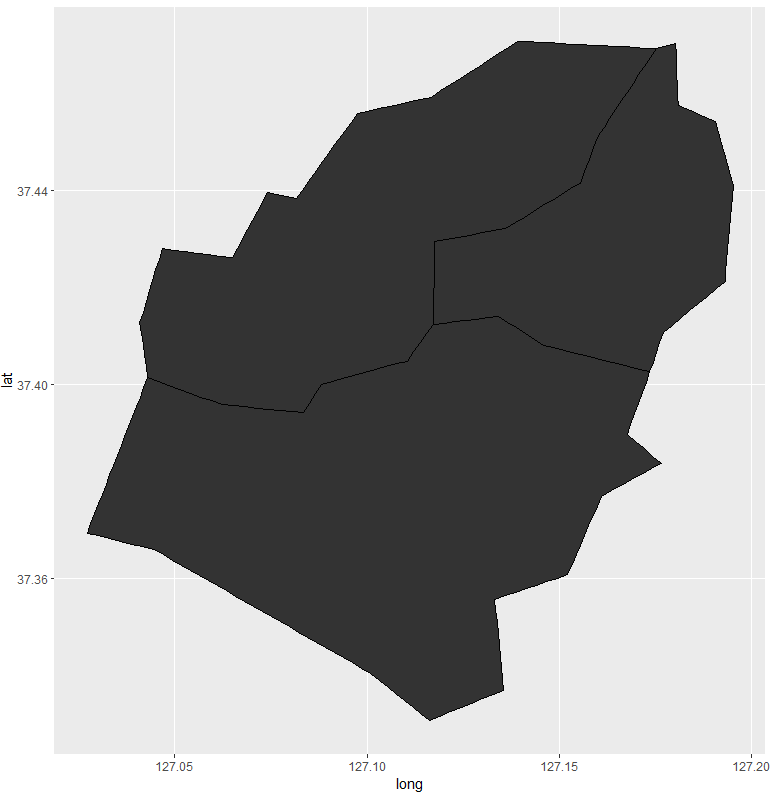

데이터 과학
.shp 지도 일부 추출
학습 목표
.shp파일에서 지도일부를 추출한다.
shapefile?
Shapefile은 확장자로 .shp을 갖고, 벡터방식으로 공간정보를 저장한다. .shp 파일은 점, 선, 면(Polygon) 중 하나의 속성을 갖는다.
.shp 파일에서 면(polygon)을 잘라내거나 1 .shp 파일에서 면(polygon)을 합칠 수도 있다. 2
shapefile?
통계청 → 통계분류포털 사이트에서,
즉, 통계청 → 통계분류포털 → 특수/일반/국제/행정구역분류를 쫓아가게 되면, 한국행정구역분류에서 대한 엑셀파일을 다운로드 받거나 웹화면으로 조회를 할 수도 있다. 결국 .shp 파일에 내재되어 있는 행정동 정보와 행정구역코드를 시도, 시군구, 읍면동으로 구분해 나갈 수 있다.
##==========================================================================
## 팩키지 및 데이터 가져오기
##==========================================================================
library(Kormaps);library(dplyr);library(ggplot2);library(maptools)
library(RColorBrewer);library(scales); library(readxl)
setwd("~/Dropbox/01_data_science") # 윈도우
##==========================================================================
## .shp 파일 및 단계구분도 적용 데이터 가져오기
##==========================================================================
# `Kormaps` 팩키지 .shp 지도 사용 (2010 행정지도)
# 행정구역을 숫자코드화한 엑셀 파일을 가져온다.
library(readxl)
admin.cd <- read_excel("kor-map/한국행정구역분류_2016.1.1.기준_4분기.xls", skip=2, sheet="1. 총괄표")
names(admin.cd.win) <- c("lvl1", "sido","lvl2","sigungu", "lvl3","emd","eng", "hanja")
# 성남시 분당구, 수정구, 중원구 뽑아내기
admin.sn <- admin.cd.win %>%
filter(lvl2 >= 31020 & lvl2 < 31030) %>%
rename(id=lvl2)
admin.sn$id <- sapply(admin.sn$id, as.character)
# 성남시에 해당되는 곳만 발라낸다.
korea.sn <- subset(korpopmap2, korpopmap2@data$code.1 %in% c("31020", "31021", "31022", "31023"))
plot(korea.sn)
# ggplot 시각화를 위해 데이터프레임으로 변환한다.
korea.shp.f <- fortify(korea.sn, region = "region")
# 성남시 지도와 병합한다. "5"자리 지역코드 korea.sn, admin.sn 을 맞춘다.
merge.shp.coef<-merge(korea.shp.f, admin.sn, by.x="id", by.y="region", all.x=TRUE)
korea.sn <-merge.shp.coef[order(merge.shp.coef$order), ]
View(korea.sn)
#==========================================================================
# 발라낸 지도를 ggplot으로 시각화한다.
#==========================================================================
ggplot() +
geom_polygon(data = korea.sn,
aes(x = long, y = lat, group = group),
color = "black", size = 0.25) +
coord_map()성남을 구성하는 중원구, 수정구, 분당구로 나눠진 것을 확인할 수 있고, 그 이전에 성남시만 별도로 발라냈다.
